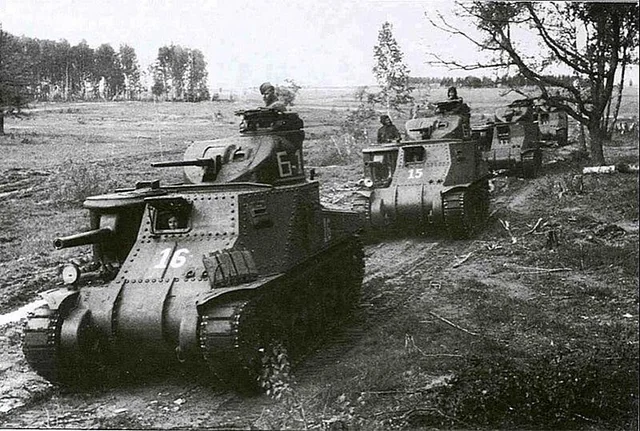

The M3 Lee (known as the Grant in British service) was an American medium tank developed in 1940 after the fall of France, when the U.S. urgently needed a tank armed with a gun capable of defeating German armor. It was named after the Confederate General Robert E. Lee, while the British-modified version was named after Union General Ulysses S. Grant. The M3’s most distinctive feature was its unusual dual gun layout — a 75 mm gun mounted in the right side of the hull in a limited-traverse sponson, and a 37 mm gun placed in a small rotating turret above. This allowed it to engage both armored and soft targets but made the silhouette tall and awkward. The M3 first saw combat in North Africa in 1942, where it proved effective against early German Panzer III and IV tanks. However, its high profile and limited main gun traverse quickly made it outdated. Despite its flaws, the M3 Lee served as an important transitional design, leading to the development of the far superior M4 Sherman, and helped the Allies fill a critical armor gap early in the war.

- Characteristics:
- Type: Medium tank
- Weight: 27 tons
- Crew: 6-7
- Armament: 75mm M3; 37mm M5; 3 x 7.62mm M1919
- Speed: 38 km/h